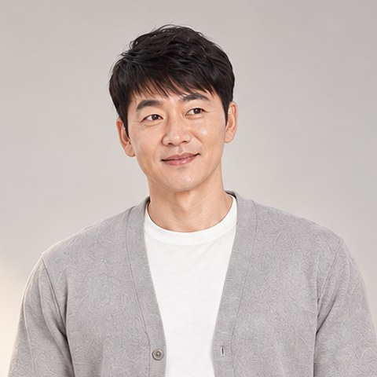
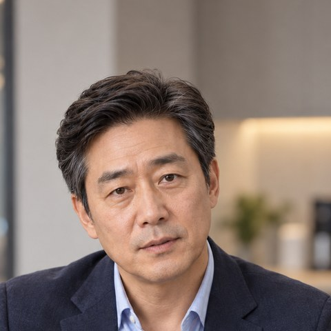

앤써
진행자 · 브랜딩·유통 담당
주황색 스마일 가면을 쓴 사업가. 카메라를 보고 시청자에게 직접 말을 거는 유일한 인물.
- 겉으로는 의기양양, 일단 지르고 본다
- 막히면 매달리거나 전화로 도움을 청한다
- 4편에서 처음으로 본업(마케팅·디자인·광고·브랜딩)으로 활약한다
처음 보시는 분들을 위한 콘티
사업가 앤써가 배우 김승수와 식품 사업을 시작하기까지
본편 전에 공개하는 4편짜리 스케치 코미디입니다.
앤써는 자신감 하나로 사람을 모으지만, 매번 한 군데씩 빈 곳이 드러납니다. 그 빈 곳을 채울 사람을 한 명씩 더 데려오는 이야기입니다.
진행자 · 브랜딩·유통 담당
주황색 스마일 가면을 쓴 사업가. 카메라를 보고 시청자에게 직접 말을 거는 유일한 인물.

배우 · 출연 담당
28년차 배우. 주몽, 허준, 주말드라마, 연예인 요리대회 우승, 미우새, SBS 연예대상 최우수상.
콘텐츠 전문가 · 팔로워 20만
뭘 물어봐도 여유롭게 “가능하죠”라고 답하는 콘텐츠 전문가.

식품 사업 전문가 · 국선생
밀키트 협회장, 한식 명인, 식품 프랜차이즈 대표, 이마트 피코크 개발.

앤써가 배우 김승수에게 식품 사업을 같이 하자고 하지만 두 번 연속 단칼에 거절당한다. 앤써는 오히려 예상했다며 다음 편에서 비장의 설득 기술을 보여주겠다고 선언한다.
엔딩 · 앤써가 "제가 어떻게 설득하는지 지켜봐주세요!"라고 외치며 다음 편 '설득의 기술'로 이어진다.
앤써 김승수

김승수를 설득하는 법을 보여주겠다던 앤써가 '영화 투자'라는 미끼를 던졌다가, 김승수의 질문 몇 개에 무너져 결국 콘텐츠 전문가에게 전화를 건다.
엔딩 · 앤써가 믿고 전화한 콘텐츠 전문가마저 '그게 가능한 거예요?'라고 되물어, 앤써 혼자 얼어붙고 김승수는 팔짱 낀 채 조용히 바라본다.
앤써 김승수 이정환

앤써가 뭐든 가능하다는 콘텐츠 전문가 이정환을 영입하지만, 이정환은 주인공 김승수를 모른다.
엔딩 · 휴대폰으로 셋을 지켜보던 최대표의 한마디: '망하기 딱 좋게 생겼네.'
앤써 김승수 이정환 최대표

배우·콘텐츠·유통까지 갖췄다고 자신하던 앤써가 식품 전문가 최대표를 찾아가지만, 정작 팔 상품이 없다는 걸 들키고 주방으로 끌려간다.
엔딩 · 앤써가 앞치마를 들고 터덜터덜 주방으로 따라가며 "열심히 해야겠네요… 그쵸?" 하고, 프리퀄이 끝나며 본편으로 이어진다.
앤써 김승수 최대표 이정환